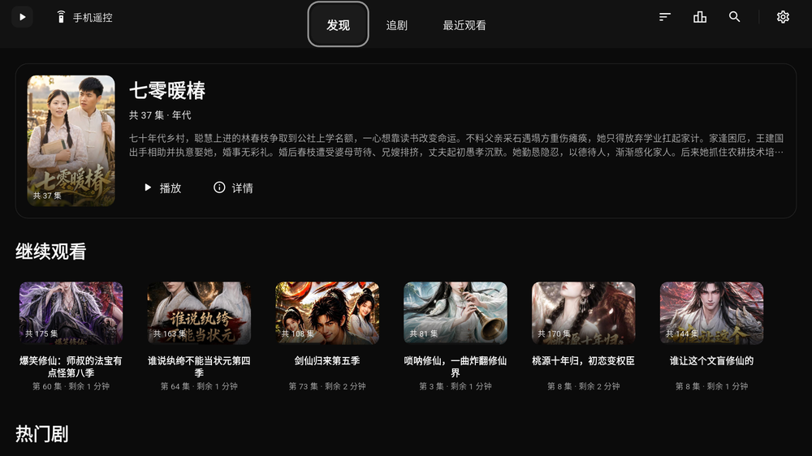
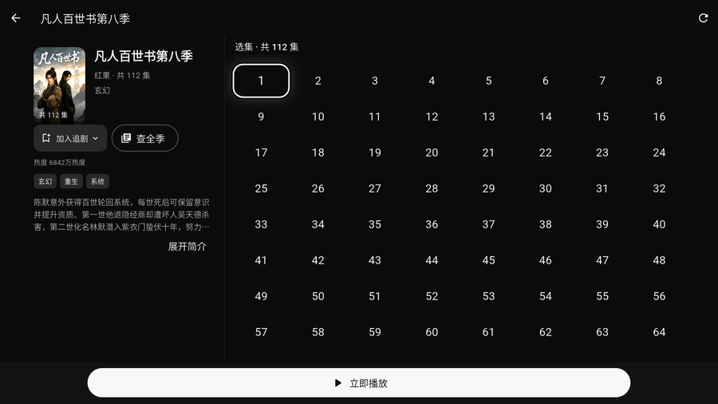

在手机、电脑、电视上找剧、接着上次看。免费使用。
| 版本 | 装在哪 | 怎么操作 |
|---|---|---|
| 手机版 | 安卓手机 / 平板 | 触屏，竖屏；支持下载缓存、后台播放、有声书模式 |
| 电脑版 | Windows 10 / 11（64 位） | 键盘鼠标，横屏大画面；适合一次连看好几集 |
| TV 版 | 电视盒子 / 智能电视 | 遥控器；为客厅大屏做了焦点高亮和字号放大 |
三个版本可以同时装，互不冲突；观看进度也能互相同步。
| 文件 | 是什么 | 适合谁 |
|---|---|---|
…-setup.exe安装版 |
双击安装，自动创建桌面快捷方式，之后能在「设置 → 应用」里正常卸载。 | 大多数人选这个，省事 |
…-windows-x64.zip免安装版 |
解压到任意文件夹，双击里面的程序就能用。不写注册表，不要了直接删文件夹。 | 想放 U 盘随身带、或在别人电脑上用完就删 |
两个文件里的程序功能完全一样，只是打包方式不同 —— 装一个就行，不用都下。
arm64-v8a 和 armeabi-v7a 有什么区别？这两个名字代表设备处理器的位数：
| 文件 | 通俗说 | 什么时候选 |
|---|---|---|
…-arm64-v8a.apk64 位版 |
给 64 位处理器用 | 先试这个。近几年的盒子和智能电视基本都是 |
…-armeabi-v7a.apk32 位版 |
给 32 位处理器用 | 上面那个装不上或打开就闪退时换这个 |


各装各的。同一台设备装一个就行，装多了也不会互相影响。
可以。三个版本都能在「设置」里配置设备互联或 WebDAV（坚果云、群晖、OpenList 都支持），各设备填同一套配置即可。
TV 版先确认位数选对了（见上面那节）；手机版确认系统是安卓 8.0 以上；电脑版确认是 Windows 10 / 11 的 64 位系统。
应用内会提示新版本，点一下就能更新。也可以随时回到本页下载最新安装包 —— 本页的版本号与下载地址会自动指向最新版。
点加速下载那条链接试试；还慢就换官方直链。两条链接的文件完全一样。
遇到问题请到 反馈区 说明： 设备型号、系统版本、软件版本（设置页最下方能看到），以及怎么操作会出现问题。
下面这组校验值用来核对文件有没有下载完整：
这串数字用来核对文件完整性，不能代替身份认证。